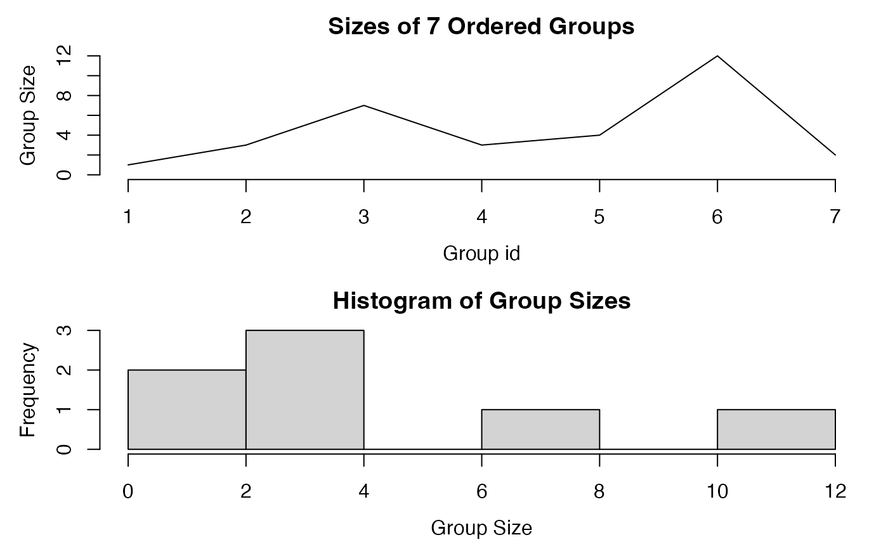

Fast Grouping / collapse Grouping Objects
GRP.RdGRP performs fast, ordered and unordered, groupings of vectors and data frames (or lists of vectors) using radixorderv or group. The output is a list-like object of class 'GRP' which can be printed, plotted and used as an efficient input to all of collapse's fast statistical and transformation functions and operators (see macros .FAST_FUN and .OPERATOR_FUN), as well as to collap, BY and TRA.
fgroup_by is similar to dplyr::group_by but faster and class-agnostic. It creates a grouped data frame with a 'GRP' object attached - for fast dplyr-like programming with collapse's fast functions.
There are also several conversion methods to and from 'GRP' objects. Notable among these is GRP.grouped_df, which returns a 'GRP' object from a grouped data frame created with dplyr::group_by or fgroup_by, and the duo GRP.factor and as_factor_GRP.
gsplit efficiently splits a vector based on a 'GRP' object, and greorder helps to recombine the results. These are the workhorses behind functions like BY, and collap, fsummarise and fmutate when evaluated with base R and user-defined functions.
Usage
GRP(X, ...)
# Default S3 method
GRP(X, by = NULL, sort = .op[["sort"]], decreasing = FALSE, na.last = TRUE,
return.groups = TRUE, return.order = sort, method = "auto",
call = TRUE, ...)
# S3 method for class 'factor'
GRP(X, ..., group.sizes = TRUE, drop = FALSE, return.groups = TRUE,
call = TRUE)
# S3 method for class 'qG'
GRP(X, ..., group.sizes = TRUE, return.groups = TRUE, call = TRUE)
# S3 method for class 'pseries'
GRP(X, effect = 1L, ..., group.sizes = TRUE, return.groups = TRUE,
call = TRUE)
# S3 method for class 'pdata.frame'
GRP(X, effect = 1L, ..., group.sizes = TRUE, return.groups = TRUE,
call = TRUE)
# S3 method for class 'grouped_df'
GRP(X, ..., return.groups = TRUE, call = TRUE)
# Identify 'GRP' objects
is_GRP(x)
# S3 method for class 'GRP'
length(x) # Length of data being grouped
GRPN(x, expand = TRUE, ...) # Group sizes (default: expanded to match data length)
GRPid(x, sort = FALSE, ...) # Group id (data length, same as GRP(.)$group.id)
GRPnames(x, force.char = TRUE, sep = ".") # Group names
as_factor_GRP(x, ordered = FALSE, sep = ".") # 'GRP'-object to (ordered) factor conversion
# Efficiently split a vector using a 'GRP' object
gsplit(x, g, use.g.names = FALSE, ...)
# Efficiently reorder y = unlist(gsplit(x, g)) such that identical(greorder(y, g), x)
greorder(x, g, ...)
# Fast, class-agnostic pendant to dplyr::group_by for use with fast functions, see details
fgroup_by(.X, ..., sort = .op[["sort"]], decreasing = FALSE, na.last = TRUE,
return.groups = TRUE, return.order = sort, method = "auto")
# Standard-evaluation analogue (slim wrapper around GRP.default(), for programming)
group_by_vars(X, by = NULL, ...)
# Shorthand for fgroup_by
gby(.X, ..., sort = .op[["sort"]], decreasing = FALSE, na.last = TRUE,
return.groups = TRUE, return.order = sort, method = "auto")
# Get grouping columns from a grouped data frame created with dplyr::group_by or fgroup_by
fgroup_vars(X, return = "data")
# Ungroup grouped data frame created with dplyr::group_by or fgroup_by
fungroup(X, ...)
# S3 method for class 'GRP'
print(x, n = 6, ...)
# S3 method for class 'GRP'
plot(x, breaks = "auto", type = "l", horizontal = FALSE, ...)Arguments
- X
a vector, list of columns or data frame (default method), or a suitable object (conversion / extractor methods).
- .X
a data frame or list.
- x, g
a 'GRP' object. For
gsplit/greorder,xcan be a vector of any type, orNULLto return the integer indices of the groups.gsplit/greorder/GRPN/GRPidalso support vectors or data frames to be passed tog/x.- by
if
Xis a data frame or list,bycan indicate columns to use for the grouping (by default all columns are used). Columns must be passed using a vector of column names, indices, a one-sided formula i.e.~ col1 + col2, a logical vector (converted to indices) or a selector function e.g.is_categorical.- sort
logical. If
FALSE, groups are not ordered but simply grouped in the order of first appearance of unique elements / rows. This often provides a performance gain if the data was not sorted beforehand. See alsomethod.- ordered
logical.
TRUEadds a class 'ordered' i.e. generates an ordered factor.- decreasing
logical. Should the sort order be increasing or decreasing? Can be a vector of length equal to the number of arguments in
X/by(argument passed toradixorderv).- na.last
logical. If missing values are encountered in grouping vector/columns, assign them to the last group (argument passed to
radixorderv).- return.groups
logical. Include the unique groups in the created GRP object.
- return.order
logical. If
sort = TRUE, include the output fromradixordervin the created GRP object. This brings performance improvements ingsplit(and thus also benefits grouped execution of base R functions).- method
character. The algorithm to use for grouping: either
"radix","hash"or"auto"."auto"will chose"radix"whensort = TRUE, yielding ordered grouping viaradixorderv, and"hash"-based grouping in first-appearance order viagroupotherwise. It is possibly to putmethod = "radix"andsort = FALSE, which will group character data in first appearance order but sort numeric data (a good hybrid option).method = "hash"currently does not support any sorting, thus puttingsort = TRUEwill simply be ignored.- group.sizes
logical.
TRUEtabulates factor levels usingtabulateto create a vector of group sizes;FALSEleaves that slot empty when converting from factors.- drop
logical.
TRUEefficiently drops unused factor levels beforehand usingfdroplevels.- call
logical.
TRUEcallsmatch.calland saves it in the final slot of the GRP object.- expand
logical.
TRUEreturns a vector the same length as the data.FALSEreturns the group sizes (computed in first-appearance-order of groups ifxis not already a 'GRP' object).- force.char
logical. Always output group names as character vector, even if a single numeric vector was passed to
GRP.default.- sep
character. The separator passed to
pastewhen creating group names from multiple grouping variables by pasting them together.- effect
plm / indexed data methods: Select which panel identifier should be used as grouping variable. 1L takes the first variable in the index, 2L the second etc., identifiers can also be passed as a character string. More than one variable can be supplied.
- return
an integer or string specifying what
fgroup_varsshould return. The options are:Int. String Description 1 "data" full grouping columns (default) 2 "unique" unique rows of grouping columns 3 "names" names of grouping columns 4 "indices" integer indices of grouping columns 5 "named_indices" named integer indices of grouping columns 6 "logical" logical selection vector of grouping columns 7 "named_logical" named logical selection vector of grouping columns - use.g.names
logical.
TRUEreturns a named list, likesplit.FALSEis slightly more efficient.
- n
integer. Number of groups to print out.
- breaks
integer. Number of breaks in the histogram of group-sizes.
- type
linetype for plot.
- horizontal
logical.
TRUEarranges plots next to each other, instead of above each other. Note that the size of each group is only plotted for objects with less than 10,000 groups.- ...
for
fgroup_by: unquoted comma-separated column names, sequences of columns, expressions involving columns, and column names, indices, logical vectors or selector functions. See Examples. Forgroup_by_vars,gsplit,greorder,GRPNandGRPid: further arguments passed toGRP(ifg/xis not already a 'GRP' object). For example thebyargument could be used if a data frame is passed.
Details
GRP is a central function in the collapse package because it provides, in the form of integer vectors, some key pieces of information to efficiently perform grouped operations at the C/C++ level.
Most statistical function require information about (1) the number of groups (2) an integer group-id indicating which values / rows belong to which group and (3) information about the size of each group. Provided with these, collapse's Fast Statistical Functions pre-allocate intermediate and result vectors of the right sizes and (in most cases) perform grouped statistical computations in a single pass through the data.
The sorting functionality of GRP.default lets groups receive different integer-id's depending on whether the groups are sorted sort = TRUE (FALSE gives first-appearance order), and in which order (argument decreasing). This affects the order of values/rows in the output whenever an aggregation is performed.
Other elements in the object provide information about whether the data was sorted by the variables defining the grouping (6) and the ordering vector (7). These also feed into optimizations in gsplit/greorder that benefit the execution of base R functions across groups.
Complimentary to GRP, the function fgroup_by is a significantly faster and class-agnostic alternative to dplyr::group_by for programming with collapse. It creates a grouped data frame with a 'GRP' object attached in a "groups" attribute. This data frame has classes 'GRP_df', ..., 'grouped_df' and 'data.frame', where ... stands for any other classes the input frame inherits such as 'data.table', 'sf', 'tbl_df', 'indexed_frame' etc.. collapse functions with a 'grouped_df' method respond to 'grouped_df' objects created with either fgroup_by or dplyr::group_by. The method GRP.grouped_df takes the "groups" attribute from a 'grouped_df' and converts it to a 'GRP' object if created with dplyr::group_by.
The 'GRP_df' class in front responds to print.GRP_df which first calls print(fungroup(x), ...) and prints one line below the object indicating the grouping variables, followed, in square brackets, by some statistics on the group sizes: [N | Mean (SD) Min-Max]. The mean is rounded to a full number and the standard deviation (SD) to one digit. Minimum and maximum are only displayed if the SD is non-zero. There also exist a method [.GRP_df which calls NextMethod but makes sure that the grouping information is preserved or dropped depending on the dimensions of the result (subsetting rows or aggregation with data.table drops the grouping object).
GRP.default supports vector and list input and will also return 'GRP' objects if passed. There is also a hidden method GRP.GRP which simply returns grouping objects (no re-grouping functionality is offered).
Apart from GRP.grouped_df there are several further conversion methods:
The conversion of factors to 'GRP' objects by GRP.factor involves obtaining the number of groups calling ng <- fnlevels(f) and then computing the count of each level using tabulate(f, ng). The integer group-id (2) is already given by the factor itself after removing the levels and class attributes and replacing any missing values with ng + 1L. The levels are put in a list and moved to position (4) in the 'GRP' object, which is reserved for the unique groups. Finally, a sortedness check !is.unsorted(id) is run on the group-id to check if the data represented by the factor was sorted (6). GRP.qG works similarly (see also qG), and the 'pseries' and 'pdata.frame' methods simply group one or more factors in the index (selected using the effect argument) .
Creating a factor from a 'GRP' object using as_factor_GRP does not involve any computations, but may involve interacting multiple grouping columns using the paste function to produce unique factor levels.
Value
A list-like object of class `GRP' containing information about the number of groups, the observations (rows) belonging to each group, the size of each group, the unique group names / definitions, whether the groups are ordered and data grouped is sorted or not, the ordering vector used to perform the ordering and the group start positions. The object is structured as follows:
| List-index | Element-name | Content type | Content description | |||
| [[1]] | N.groups | integer(1) | Number of Groups | |||
| [[2]] | group.id | integer(NROW(X)) | An integer group-identifier | |||
| [[3]] | group.sizes | integer(N.groups) | Vector of group sizes | |||
| [[4]] | groups | unique(X) or NULL | Unique groups (same format as input, except for fgroup_by which uses a plain list, sorted if sort = TRUE), or NULL if return.groups = FALSE | |||
| [[5]] | group.vars | character | The names of the grouping variables | |||
| [[6]] | ordered | logical(2) | [1] Whether the groups are ordered: equal to the sort argument in the default method, or TRUE if converted objects inherit a class "ordered" and NA otherwise, [2] Whether the data (X) is already sorted: the result of !is.unsorted(group.id). If sort = FALSE (default method) the second entry is NA. | |||
| [[7]] | order | integer(NROW(X)) or NULL | Ordering vector from radixorderv (with "starts" attribute), or NULL if return.order = FALSE | |||
| [[8]] | group.starts | integer(N.groups) or NULL | The first-occurrence positions/rows of the groups. Useful e.g. with ffirst(x, g, na.rm = FALSE). NULL if return.groups = FALSE. | |||
| [[9]] | call | match.call() or NULL | The GRP() call, obtained from match.call(), or NULL if call = FALSE |
Examples
## default method
GRP(mtcars$cyl)
#> collapse grouping object of length 32 with 3 ordered groups
#>
#> Call: GRP.default(X = mtcars$cyl), X is unsorted
#>
#> Distribution of group sizes:
#> Min. 1st Qu. Median Mean 3rd Qu. Max.
#> 7.00 9.00 11.00 10.67 12.50 14.00
#>
#> Groups with sizes:
#> 4 6 8
#> 11 7 14
GRP(mtcars, ~ cyl + vs + am) # Or GRP(mtcars, c("cyl","vs","am")) or GRP(mtcars, c(2,8:9))
#> collapse grouping object of length 32 with 7 ordered groups
#>
#> Call: GRP.default(X = mtcars, by = ~cyl + vs + am), X is unsorted
#>
#> Distribution of group sizes:
#> Min. 1st Qu. Median Mean 3rd Qu. Max.
#> 1.000 2.500 3.000 4.571 5.500 12.000
#>
#> Groups with sizes:
#> 4.0.1 4.1.0 4.1.1 6.0.1 6.1.0 8.0.0 8.0.1
#> 1 3 7 3 4 12 2
g <- GRP(mtcars, ~ cyl + vs + am) # Saving the object
print(g) # Printing it
#> collapse grouping object of length 32 with 7 ordered groups
#>
#> Call: GRP.default(X = mtcars, by = ~cyl + vs + am), X is unsorted
#>
#> Distribution of group sizes:
#> Min. 1st Qu. Median Mean 3rd Qu. Max.
#> 1.000 2.500 3.000 4.571 5.500 12.000
#>
#> Groups with sizes:
#> 4.0.1 4.1.0 4.1.1 6.0.1 6.1.0 8.0.0 8.0.1
#> 1 3 7 3 4 12 2
plot(g) # Plotting it

GRPnames(g) # Retain group names
#> [1] "4.0.1" "4.1.0" "4.1.1" "6.0.1" "6.1.0" "8.0.0" "8.0.1"
GRPid(g) # Retain group id (same as g$group.id), useful inside fmutate()
#> [1] 4 4 3 5 6 5 6 2 2 5 5 6 6 6 6 6 6 3 3 3 2 6 6 6 6 3 1 3 7 4 7 3
fsum(mtcars, g) # Compute the sum of mtcars, grouped by variables cyl, vs and am
#> mpg cyl disp hp drat wt qsec vs am gear carb
#> 4.0.1 26.0 4 120.3 91 4.43 2.140 16.70 0 1 5 2
#> 4.1.0 68.7 12 407.6 254 11.31 8.805 62.91 3 0 11 5
#> 4.1.1 198.6 28 628.6 564 29.04 14.198 130.90 7 7 29 10
#> 6.0.1 61.7 18 465.0 395 11.42 8.265 48.98 0 3 13 14
#> 6.1.0 76.5 24 818.2 461 13.68 13.555 76.86 4 0 14 10
#> 8.0.0 180.6 96 4291.4 2330 37.45 49.249 205.71 0 0 36 37
#> [ reached 'max' / getOption("max.print") -- omitted 1 rows ]
gsplit(mtcars$mpg, g) # Use the object to split a vector
#> [[1]]
#> [1] 26
#>
#> [[2]]
#> [1] 24.4 22.8 21.5
#>
#> [[3]]
#> [1] 22.8 32.4 30.4 33.9 27.3 30.4 21.4
#>
#> [[4]]
#> [1] 21.0 21.0 19.7
#>
#> [[5]]
#> [1] 21.4 18.1 19.2 17.8
#>
#> [[6]]
#> [1] 18.7 14.3 16.4 17.3 15.2 10.4 10.4 14.7 15.5 15.2 13.3 19.2
#>
#> [[7]]
#> [1] 15.8 15.0
#>
gsplit(NULL, g) # The indices of the groups
#> [[1]]
#> [1] 27
#>
#> [[2]]
#> [1] 8 9 21
#>
#> [[3]]
#> [1] 3 18 19 20 26 28 32
#>
#> [[4]]
#> [1] 1 2 30
#>
#> [[5]]
#> [1] 4 6 10 11
#>
#> [[6]]
#> [1] 5 7 12 13 14 15 16 17 22 23 24 25
#>
#> [[7]]
#> [1] 29 31
#>
identical(mtcars$mpg, # greorder and unlist undo the effect of gsplit
greorder(unlist(gsplit(mtcars$mpg, g)), g))
#> [1] TRUE
## Convert factor to GRP object and vice-versa
GRP(iris$Species)
#> collapse grouping object of length 150 with 3 ordered groups
#>
#> Call: GRP.factor(X = iris$Species), X is sorted
#>
#> Distribution of group sizes:
#> Min. 1st Qu. Median Mean 3rd Qu. Max.
#> 50 50 50 50 50 50
#>
#> Groups with sizes:
#> setosa versicolor virginica
#> 50 50 50
as_factor_GRP(g)
#> [1] 6.0.1 6.0.1 4.1.1 6.1.0 8.0.0 6.1.0 8.0.0 4.1.0 4.1.0 6.1.0 6.1.0 8.0.0
#> [13] 8.0.0 8.0.0 8.0.0 8.0.0 8.0.0 4.1.1 4.1.1 4.1.1 4.1.0 8.0.0 8.0.0 8.0.0
#> [25] 8.0.0 4.1.1 4.0.1 4.1.1 8.0.1 6.0.1 8.0.1 4.1.1
#> Levels: 4.0.1 4.1.0 4.1.1 6.0.1 6.1.0 8.0.0 8.0.1
## dplyr integration
library(dplyr)
#>
#> Attaching package: ‘dplyr’
#> The following objects are masked from ‘package:stats’:
#>
#> filter, lag
#> The following objects are masked from ‘package:base’:
#>
#> intersect, setdiff, setequal, union
mtcars |> group_by(cyl,vs,am) |> GRP() # Get GRP object from a dplyr grouped tibble
#> collapse grouping object of length 32 with 7 ordered groups
#>
#> Call: GRP.grouped_df(X = group_by(mtcars, cyl, vs, am)), X is unsorted
#>
#> Distribution of group sizes:
#> Min. 1st Qu. Median Mean 3rd Qu. Max.
#> 1.000 2.500 3.000 4.571 5.500 12.000
#>
#> Groups with sizes:
#> 4.0.1 4.1.0 4.1.1 6.0.1 6.1.0 8.0.0 8.0.1
#> 1 3 7 3 4 12 2
mtcars |> group_by(cyl,vs,am) |> fmean() # Grouped mean using dplyr grouping
#> # A tibble: 7 × 11
#> cyl vs am mpg disp hp drat wt qsec gear carb
#> <dbl> <dbl> <dbl> <dbl> <dbl> <dbl> <dbl> <dbl> <dbl> <dbl> <dbl>
#> 1 4 0 1 26 120. 91 4.43 2.14 16.7 5 2
#> 2 4 1 0 22.9 136. 84.7 3.77 2.94 21.0 3.67 1.67
#> 3 4 1 1 28.4 89.8 80.6 4.15 2.03 18.7 4.14 1.43
#> 4 6 0 1 20.6 155 132. 3.81 2.76 16.3 4.33 4.67
#> 5 6 1 0 19.1 205. 115. 3.42 3.39 19.2 3.5 2.5
#> 6 8 0 0 15.1 358. 194. 3.12 4.10 17.1 3 3.08
#> 7 8 0 1 15.4 326 300. 3.88 3.37 14.6 5 6
mtcars |> fgroup_by(cyl,vs,am) |> fmean() # Faster alternative with collapse grouping
#> cyl vs am mpg disp hp drat wt qsec gear
#> 1 4 0 1 26.00000 120.3000 91.00000 4.430000 2.140000 16.70000 5.000000
#> 2 4 1 0 22.90000 135.8667 84.66667 3.770000 2.935000 20.97000 3.666667
#> 3 4 1 1 28.37143 89.8000 80.57143 4.148571 2.028286 18.70000 4.142857
#> 4 6 0 1 20.56667 155.0000 131.66667 3.806667 2.755000 16.32667 4.333333
#> 5 6 1 0 19.12500 204.5500 115.25000 3.420000 3.388750 19.21500 3.500000
#> 6 8 0 0 15.05000 357.6167 194.16667 3.120833 4.104083 17.14250 3.000000
#> carb
#> 1 2.000000
#> 2 1.666667
#> 3 1.428571
#> 4 4.666667
#> 5 2.500000
#> 6 3.083333
#> [ reached 'max' / getOption("max.print") -- omitted 1 rows ]
mtcars |> fgroup_by(cyl,vs,am) # Print method for grouped data frame
#> mpg cyl disp hp drat wt qsec vs am gear carb
#> Mazda RX4 21.0 6 160 110 3.90 2.620 16.46 0 1 4 4
#> Mazda RX4 Wag 21.0 6 160 110 3.90 2.875 17.02 0 1 4 4
#> Datsun 710 22.8 4 108 93 3.85 2.320 18.61 1 1 4 1
#> Hornet 4 Drive 21.4 6 258 110 3.08 3.215 19.44 1 0 3 1
#> Hornet Sportabout 18.7 8 360 175 3.15 3.440 17.02 0 0 3 2
#> Valiant 18.1 6 225 105 2.76 3.460 20.22 1 0 3 1
#> [ reached 'max' / getOption("max.print") -- omitted 26 rows ]
#>
#> Grouped by: cyl, vs, am [7 | 5 (3.8) 1-12]
## Adding a column of group sizes.
mtcars |> fgroup_by(cyl,vs,am) |> fsummarise(Sizes = GRPN())
#> cyl vs am Sizes
#> 1 4 0 1 1
#> 2 4 1 0 3
#> 3 4 1 1 7
#> 4 6 0 1 3
#> 5 6 1 0 4
#> 6 8 0 0 12
#> 7 8 0 1 2
# Note: can also set_collapse(mask = "n") to use n() instead, see help("collapse-options")
# Other usage modes:
mtcars |> fgroup_by(cyl,vs,am) |> fmutate(Sizes = GRPN())
#> mpg cyl disp hp drat wt qsec vs am gear carb Sizes
#> Mazda RX4 21.0 6 160 110 3.90 2.620 16.46 0 1 4 4 3
#> Mazda RX4 Wag 21.0 6 160 110 3.90 2.875 17.02 0 1 4 4 3
#> Datsun 710 22.8 4 108 93 3.85 2.320 18.61 1 1 4 1 7
#> Hornet 4 Drive 21.4 6 258 110 3.08 3.215 19.44 1 0 3 1 4
#> Hornet Sportabout 18.7 8 360 175 3.15 3.440 17.02 0 0 3 2 12
#> [ reached 'max' / getOption("max.print") -- omitted 27 rows ]
#>
#> Grouped by: cyl, vs, am [7 | 5 (3.8) 1-12]
mtcars |> fmutate(Sizes = GRPN(list(cyl,vs,am))) # Same thing, slightly more efficient
#> mpg cyl disp hp drat wt qsec vs am gear carb Sizes
#> Mazda RX4 21.0 6 160 110 3.90 2.620 16.46 0 1 4 4 3
#> Mazda RX4 Wag 21.0 6 160 110 3.90 2.875 17.02 0 1 4 4 3
#> Datsun 710 22.8 4 108 93 3.85 2.320 18.61 1 1 4 1 7
#> Hornet 4 Drive 21.4 6 258 110 3.08 3.215 19.44 1 0 3 1 4
#> Hornet Sportabout 18.7 8 360 175 3.15 3.440 17.02 0 0 3 2 12
#> [ reached 'max' / getOption("max.print") -- omitted 27 rows ]
## Various options for programming and interactive use
fgroup_by(GGDC10S, Variable, Decade = floor(Year / 10) * 10) |> head(3)
#> Country Regioncode Region Variable Year AGR MIN MAN PU CON WRT
#> 1 BWA SSA Sub-saharan Africa VA 1960 NA NA NA NA NA NA
#> 2 BWA SSA Sub-saharan Africa VA 1961 NA NA NA NA NA NA
#> 3 BWA SSA Sub-saharan Africa VA 1962 NA NA NA NA NA NA
#> TRA FIRE GOV OTH SUM
#> 1 NA NA NA NA NA
#> 2 NA NA NA NA NA
#> 3 NA NA NA NA NA
fgroup_by(GGDC10S, 1:3, 5) |> head(3)
#> Country Regioncode Region Variable Year AGR MIN MAN PU CON WRT
#> 1 BWA SSA Sub-saharan Africa VA 1960 NA NA NA NA NA NA
#> 2 BWA SSA Sub-saharan Africa VA 1961 NA NA NA NA NA NA
#> 3 BWA SSA Sub-saharan Africa VA 1962 NA NA NA NA NA NA
#> TRA FIRE GOV OTH SUM
#> 1 NA NA NA NA NA
#> 2 NA NA NA NA NA
#> 3 NA NA NA NA NA
fgroup_by(GGDC10S, c("Variable", "Country")) |> head(3)
#> Country Regioncode Region Variable Year AGR MIN MAN PU CON WRT
#> 1 BWA SSA Sub-saharan Africa VA 1960 NA NA NA NA NA NA
#> 2 BWA SSA Sub-saharan Africa VA 1961 NA NA NA NA NA NA
#> 3 BWA SSA Sub-saharan Africa VA 1962 NA NA NA NA NA NA
#> TRA FIRE GOV OTH SUM
#> 1 NA NA NA NA NA
#> 2 NA NA NA NA NA
#> 3 NA NA NA NA NA
fgroup_by(GGDC10S, is.character) |> head(3)
#> Country Regioncode Region Variable Year AGR MIN MAN PU CON WRT
#> 1 BWA SSA Sub-saharan Africa VA 1960 NA NA NA NA NA NA
#> 2 BWA SSA Sub-saharan Africa VA 1961 NA NA NA NA NA NA
#> 3 BWA SSA Sub-saharan Africa VA 1962 NA NA NA NA NA NA
#> TRA FIRE GOV OTH SUM
#> 1 NA NA NA NA NA
#> 2 NA NA NA NA NA
#> 3 NA NA NA NA NA
fgroup_by(GGDC10S, Country:Variable, Year) |> head(3)
#> Country Regioncode Region Variable Year AGR MIN MAN PU CON WRT
#> 1 BWA SSA Sub-saharan Africa VA 1960 NA NA NA NA NA NA
#> 2 BWA SSA Sub-saharan Africa VA 1961 NA NA NA NA NA NA
#> 3 BWA SSA Sub-saharan Africa VA 1962 NA NA NA NA NA NA
#> TRA FIRE GOV OTH SUM
#> 1 NA NA NA NA NA
#> 2 NA NA NA NA NA
#> 3 NA NA NA NA NA
fgroup_by(GGDC10S, Country:Region, Var = Variable, Year) |> head(3)
#> Country Regioncode Region Variable Year AGR MIN MAN PU CON WRT
#> 1 BWA SSA Sub-saharan Africa VA 1960 NA NA NA NA NA NA
#> 2 BWA SSA Sub-saharan Africa VA 1961 NA NA NA NA NA NA
#> 3 BWA SSA Sub-saharan Africa VA 1962 NA NA NA NA NA NA
#> TRA FIRE GOV OTH SUM
#> 1 NA NA NA NA NA
#> 2 NA NA NA NA NA
#> 3 NA NA NA NA NA
## Note that you can create a grouped data frame without materializing the unique grouping columns
fgroup_by(GGDC10S, Variable, Country, return.groups = FALSE) |> fmutate(across(AGR:SUM, fscale))
#> Country Regioncode Region Variable Year AGR MIN MAN PU CON WRT
#> 1 BWA SSA Sub-saharan Africa VA 1960 NA NA NA NA NA NA
#> 2 BWA SSA Sub-saharan Africa VA 1961 NA NA NA NA NA NA
#> 3 BWA SSA Sub-saharan Africa VA 1962 NA NA NA NA NA NA
#> 4 BWA SSA Sub-saharan Africa VA 1963 NA NA NA NA NA NA
#> TRA FIRE GOV OTH SUM
#> 1 NA NA NA NA NA
#> 2 NA NA NA NA NA
#> 3 NA NA NA NA NA
#> 4 NA NA NA NA NA
#> [ reached 'max' / getOption("max.print") -- omitted 5023 rows ]
#>
#> Grouped by: Variable, Country [85 | 59 (7.7) 4-65]
fgroup_by(GGDC10S, Variable, Country, return.groups = FALSE) |> fselect(AGR:SUM) |> fmean()
#> AGR MIN MAN PU CON WRT
#> 1 1419.8013 52.08903 1931.76020 101.720936 742.40444 1982.17750
#> 2 964.2103 56.03295 235.03321 5.346433 122.78267 281.51638
#> 3 17191.3529 206.02389 6991.37096 364.573404 3524.73837 8509.46124
#> 4 188.0574 10.47964 18.05585 3.093238 25.34108 36.32971
#> 5 701.9112 101.41742 624.90303 29.358568 296.00226 694.66129
#> 6 287744.2384 7049.52662 67143.63401 1606.064456 20851.66641 28908.10661
#> TRA FIRE GOV OTH SUM
#> 1 648.511948 627.79291 2043.47128 992.44753 10542.1770
#> 2 115.472843 44.56442 NA 395.56503 2220.5242
#> 3 2054.373148 4413.54448 5307.28010 5710.26650 54272.9850
#> 4 8.362217 15.33622 61.10484 27.60635 393.7666
#> 5 258.240876 272.43836 NA 1003.43964 3982.3726
#> 6 13928.607381 4929.26308 22669.24815 30990.11860 485820.4737
#> [ reached 'max' / getOption("max.print") -- omitted 79 rows ]
## Note also that setting sort = FALSE on unsorted data can be much faster... if not required...
library(microbenchmark)
microbenchmark(gby(GGDC10S, Variable, Country), gby(GGDC10S, Variable, Country, sort = FALSE))
#> Warning: less accurate nanosecond times to avoid potential integer overflows
#> Unit: microseconds
#> expr min lq mean median
#> gby(GGDC10S, Variable, Country) 81.795 83.9885 88.86791 85.5875
#> gby(GGDC10S, Variable, Country, sort = FALSE) 28.618 29.7045 31.31088 30.3195
#> uq max neval
#> 89.5235 295.815 100
#> 32.3080 48.585 100